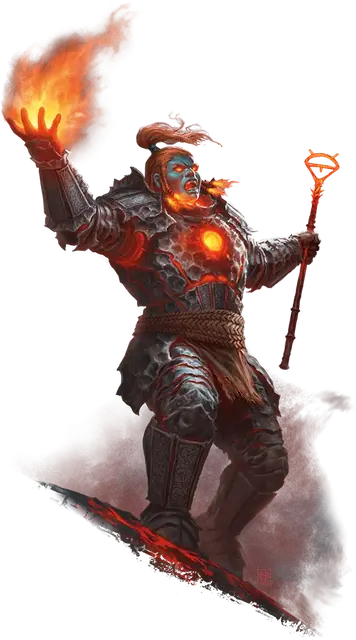

Огненный великан Злого огня
Fire Giant of Evil Fire
Огромный Великан, обычно законно-злой

Класс Доспеха 18 (латы)
Хиты 150 (12к12 + 72)
Скорость 30 футов
| мод | спас | ||
|---|---|---|---|
| СИЛ | 25 | +7 | +7 |
| ЛОВ | 9 | −1 | −1 |
| ТЕЛ | 23 | +6 | +10 |
| мод | спас | ||
|---|---|---|---|
| ИНТ | 10 | +0 | +0 |
| МДР | 19 | +4 | +8 |
| ХАР | 14 | +2 | +6 |
Навыки Атлетика +11, Восприятие +8
Иммунитет к урону огонь
Чувства пассивное Восприятие 18
Языки Общий, Великаний, Игнан
Опасность 10 (5900 опыта)
Бонус мастерства +4
Особенности
Осколочный взрыв. Когда хиты великана опускаются до 0, его доспех взрывается, разрушая тело гиганта и разбрасывая доспех в виде шрапнели. Существа в пределах 10 футов от великана, когда его доспех взрывается, должны совершить спасбросок Ловкости Сл 18, получив 21 (6к6) колющего урона в случае провала или половину этого урона в случае успеха.
Действия
Мультиатака. Великан совершает две атаки Пылающим скипетром или две атаки Болтом Имикса.
Пылающий скипетр. Рукопашная атака оружием: +11 к попаданию, досягаемость 10 футов, одна цель. Попадание: 17 (3к6 + 7) дробящего урона плюс 9 (2к8) урона огнём и цель получает магическое клеймо. Будучи заклейменной таким образом, цель становится видимой, если она невидима, не может стать невидимой и излучает тусклый свет в радиусе 5 футов. Клеймо исчезает через 24 часа или может быть снято с существа или предмета любым заклинанием, снимающим проклятие.
Болт Имикса. Дальнобойная атака заклинанием: +8 к попаданию, дальность 120 футов, одна цель. Попадание: 20 (3к10 + 4) урона огнём и цель должна преуспеть в спасброске Мудрости Сл 16, иначе она станет испуганной до конца следующего хода цели.
Описание
Огненный великан рождается вокруг пламени, работает с пламенем и живёт среди пламени, но огненный великан, который смотрит в пламя слишком глубоко, может увидеть Принца Злого огня, Имикса, смотрящего в ответ. Великаны, попавшие под влияние Имикса, могут покинуть свои дома, чтобы присоединиться к культистам-единомышленникам, но другие остаются в своих сообществах, преследуя разрушительные планы Имикса.
Огненный великан Злого Огня выковывает набор доспехов и оружия в пламени, благословленном Имиксом. Затем великан может призвать это волшебное пламя, чтобы поразить врагов Вечного огня. Доспех, выкованная в этом пламени, приваривается к плоти, поэтому, пока великан не сгорит, доспех нельзя будет снять после того, как она наденета. Когда великан умирает, доспех взрывается как последний дар Всепожирающего Огня.